library(spdep) |> suppressPackageStartupMessages()
library(parallel)
glance_htest <- function(ht) c(ht$estimate,
"Std deviate" = unname(ht$statistic),
"p.value" = unname(ht$p.value))
set.seed(1)
(pol_pres15 |>
nrow() |>
rnorm() -> x) |>
moran.test(lw_q_B, randomisation = FALSE,
alternative = "two.sided") |>
glance_htest()
# Moran I statistic Expectation Variance
# -0.004772 -0.000401 0.000140
# Std deviate p.value
# -0.369320 0.71188915 Measures of Spatial Autocorrelation
When analysing areal data, it has long been recognised that, if present, spatial autocorrelation changes how we may infer, relative to the default assumption of independent observations. In the presence of spatial autocorrelation, we can predict the values of observation \(i\) from the values observed at \(j \in N_i\), the set of its proximate neighbours. Early results (Moran 1948; Geary 1954) entered into research practice gradually, for example the social sciences (Duncan, Cuzzort, and Duncan 1961). These results were then collated and extended to yield a set of basic tools of analysis (Cliff and Ord 1973, 1981).
Cliff and Ord (1973) generalised and extended the expression of the spatial weights matrix representation as part of the framework for establishing the distribution theory for join-count, Moran’s \(I\) and Geary’s \(C\) statistics. This development of what have become known as global measures, returning a single value of autocorrelation for the total study area, has been supplemented by local measures returning values for each areal unit (Getis and Ord 1992; Anselin 1995).
The measures offered by the spdep package have been written partly to provide implementations, but also to permit the comparative investigation of these measures and their implementation. For this reason, the implementations are written in R rather than compiled code, and they are generally slower but more flexible than implementations in the newly released rgeoda package (Li and Anselin 2021; Anselin, Li, and Koschinsky 2021).
15.1 Measures and process misspecification
It is not and has never been the case that Tobler’s first law of geography, “Everything is related to everything else, but near things are more related than distant things”, always holds absolutely. This is and has always been an oversimplification, disguising possible underlying entitation, support, and other misspecification problems. Are the units of observation appropriate for the scale of the underlying spatial process? Could the spatial patterning of the variable of interest for the chosen entitation be accounted for by another variable?
Tobler (1970) was published in the same special issue of Economic Geography as Olsson (1970), but Olsson does grasp the important point that spatial autocorrelation is not inherent in spatial phenomena, but often, is engendered by inappropriate entitation, by omitted variables and/or inappropriate functional form. The key quote from Olsson is on p. 228:
The existence of such autocorrelations makes it tempting to agree with Tobler (1970, 236 [the original refers to the pagination of a conference paper]) that ‘everything is related to everything else, but near things are more related than distant things.’ On the other hand, the fact that the autocorrelations seem to hide systematic specification errors suggests that the elevation of this statement to the status of ‘the first law of geography’ is at best premature. At worst, the statement may represent the spatial variant of the post hoc fallacy, which would mean that coincidence has been mistaken for a causal relation.
The status of the “first law” is very similar to the belief that John Snow induced from a map the cause of cholera as water-borne. It may be a good way of selling GIS, but it is inaccurate: Snow had a strong working hypothesis prior to visiting Soho, and the map was prepared after the Broad Street pump was disabled as documentation that his hypothesis held (Brody et al. 2000).
Measures of spatial autocorrelation unfortunately pick up other misspecifications in the way that we model data (Schabenberger and Gotway 2005; McMillen 2003). For reference, Moran’s \(I\) is given as (Cliff and Ord 1981, 17):
\[
I = \frac{n \sum_{(2)} w_{ij} z_i z_j}{S_0 \sum_{i=1}^{n} z_i^2}
\] where \(x_i, i=1, \ldots, n\) are \(n\) observations on the numeric variable of interest, \(z_i = x_i - \bar{x}\), \(\bar{x} = \sum_{i=1}^{n} x_i / n\), \(\sum_{(2)} = \stackrel{\sum_{i=1}^{n} \sum_{j=1}^{n}}{i \neq j}\), \(w_{ij}\) are the spatial weights, and \(S_0 = \sum_{(2)} w_{ij}\). First we test a random variable using the Moran test, here under the normality assumption (argument randomisation=FALSE, default TRUE). Inference is made on the statistic \(Z(I) = \frac{I - E(I)}{\sqrt{\mathrm{Var}(I)}}\), the z-value compared with the Normal distribution for \(E(I)\) and \(\mathrm{Var}(I)\) for the chosen assumptions; this x does not show spatial autocorrelation with these spatial weights:
import pickle
import pandas as pd
import numpy as np
import matplotlib.pyplot as plt
from libpysal import weights
import esda
from esda.moran import Moran, Moran_Local
from splot.esda import moran_scatterplot, plot_moran, lisa_cluster
# Load the data saved from the previous chapter
with open('ch14_py.pkl', 'rb') as f:
data = pickle.load(f)
gdf = data['gdf']
w_q_B = data['w_q']
# Ensure weights are row-standardized
w_q_B.transform = 'r'
## Test Moran's I in a random variable
# Set seed
np.random.seed(1)
# Generate random normal data (n rows)
x = np.random.normal(size=len(gdf))
# Calculate Moran's I using Binary weights (w_q_B)
# permutations=0 prevents Monte Carlo simulation (analytical approach)
mi_rand = Moran(x, w_q_B, permutations=0)
# z_norm and p_norm use the Normality assumption (randomisation=FALSE)
print(f"Moran I statistic: {mi_rand.I:.5f}")
# Moran I statistic: -0.00348
print(f"Std deviate: {mi_rand.z_norm:.5f}")
# Std deviate: -0.24878
print(f"p-value: {mi_rand.p_norm:.5f}")
# p-value: 0.80353The test however detects quite strong positive spatial autocorrelation when we insert a gentle trend into the data, but omit to include it in the mean model, thus creating a missing variable problem but finding spatial autocorrelation instead:
beta <- 0.0015
coords |>
st_coordinates() |>
subset(select = 1, drop = TRUE) |>
(function(x) x/1000)() -> t
(x + beta * t -> x_t) |>
moran.test(lw_q_B, randomisation = FALSE,
alternative = "two.sided") |>
glance_htest()
# Moran I statistic Expectation Variance
# 0.043403 -0.000401 0.000140
# Std deviate p.value
# 3.701491 0.000214beta = 0.0015
# Extract X coordinates and scale to km (divide by 1000)
t = gdf.geometry.centroid.x.values / 1000.0
# Add trend
x_t = x + beta * t
# Calculate Moran's I on trend data
mi_trend = Moran(x_t, w_q_B, permutations=0)
print(f"Moran I statistic: {mi_trend.I:.5f}")
# Moran I statistic: 0.04493
print(f"Std deviate: {mi_trend.z_norm:.5f}")
# Std deviate: 3.65942
print(f"p-value: {mi_trend.p_norm:.5f}")
# p-value: 0.00025If we test the residuals of a linear model including the trend, the apparent spatial autocorrelation disappears:
lm(x_t ~ t) |>
lm.morantest(lw_q_B, alternative = "two.sided") |>
glance_htest()
# Observed Moran I Expectation Variance Std deviate
# -0.004777 -0.000789 0.000140 -0.337306
# p.value
# 0.735886from spreg import OLS
# spreg expects 2D arrays for X (predictors)
# t is currently 1D, so we reshape it to 2D: (n_rows, 1_column)
t_2d = t.reshape(-1, 1)
# Fit Ols and set moran=True to compute Moran's I on residuals this requires spat_diag=True
m_ols = OLS(x_t, t_2d, w=w_q_B,spat_diag=True, moran=True)
# m_ols.moran_res is a tuple: (Statistic, Z-Score, P-Value)
mi, z, p = m_ols.moran_res
print(f"Moran I statistic: {mi:.5f}")
# Moran I statistic: -0.00365
print(f"Std deviate: {z:.5f}")
# Std deviate: -0.23019
print(f"p-value: {p:.5f}")
# p-value: 0.81795A comparison of implementations of measures of spatial autocorrelation shows that a wide range of measures is available in R in a number of packages, chiefly in the spdep package (Bivand 2022b), and that differences from other implementations can be attributed to design decisions (Bivand and Wong 2018). The spdep package also includes the only implementations of exact and saddlepoint approximations to global and local Moran’s I for regression residuals (Tiefelsdorf 2002; Bivand, Müller, and Reder 2009).
15.2 Global measures
Global measures consider the average level of spatial autocorrelation across all observations; they can of course be biased (as most spatial statistics) by edge effects where important spatial process components fall outside the study area.
Join-count tests for categorical data
We will begin by examining join-count statistics, where joincount.test takes a "factor" vector of values fx and a listw object, and returns a list of htest (hypothesis test) objects defined in the stats package, one htest object for each level of the fx argument. The observed counts are of neighbours with the same factor levels, known as same-colour joins.
args(joincount.test)# function (fx, listw, zero.policy = attr(listw, "zero.policy"),
# alternative = "greater", sampling = "nonfree", spChk = NULL,
# adjust.n = TRUE)The function takes an alternative argument for hypothesis testing, a sampling argument showing the basis for the construction of the variance of the measure, where the default "nonfree" choice corresponds to analytical permutation; the spChk argument is retained for backward compatibility. For reference, the counts of factor levels for the type of municipality or Warsaw borough are:
(pol_pres15 |>
st_drop_geometry() |>
subset(select = types, drop = TRUE) -> Types) |>
table()
#
# Rural Urban Urban/rural Warsaw Borough
# 1563 303 611 18Types = gdf['types']
# Create the table (counts of each type)
print(Types.value_counts().sort_index())
# types
# Rural 1563
# Urban 303
# Urban/rural 611
# Warsaw Borough 18
# Name: count, dtype: int64Since there are four levels, we rearrange the list of htest objects to give a matrix of estimated results. The observed same-colour join-counts are tabulated with their expectations based on the counts of levels of the input factor, so that few joins would be expected between for example Warsaw boroughs, because there are very few of them. The variance calculation uses the underlying constants of the chosen listw object and the counts of levels of the input factor. The z-value is obtained in the usual way by dividing the difference between the observed and expected join-counts by the square root of the variance.
The join-count test was subsequently adapted for multi-colour join-counts (Upton and Fingleton 1985). The implementation as joincount.multi in spdep returns a table based on non-free sampling, and does not report p-values.
Types |> joincount.multi(listw = lw_q_B)
# Joincount Expected Variance z-value
# Rural:Rural 3087.000 2793.920 1126.534 8.73
# Urban:Urban 110.000 104.719 93.299 0.55
# Urban/rural:Urban/rural 656.000 426.526 331.759 12.60
# Warsaw Borough:Warsaw Borough 41.000 0.350 0.347 68.96
# Urban:Rural 668.000 1083.941 708.209 -15.63
# Urban/rural:Rural 2359.000 2185.769 1267.131 4.87
# Urban/rural:Urban 171.000 423.729 352.190 -13.47
# Warsaw Borough:Rural 12.000 64.393 46.460 -7.69
# Warsaw Borough:Urban 9.000 12.483 11.758 -1.02
# Warsaw Borough:Urban/rural 8.000 25.172 22.354 -3.63
# Jtot 3227.000 3795.486 1496.398 -14.70types = gdf['types'].astype(object).reset_index(drop=True)
adj = w_q_B.to_adjlist(remove_symmetric=False)
def get_counts(adj_df, type_series):
focal_types = type_series.iloc[adj_df['focal'].values].astype(str).values
neighbor_types = type_series.iloc[adj_df['neighbor'].values].astype(str).values
mask = focal_types > neighbor_types
first = np.where(mask, neighbor_types, focal_types)
second = np.where(mask, focal_types, neighbor_types)
# Concatenate to make the pair labels
pairs = pd.Series(first + ":" + second)
# value_counts() to count the binary edges
# each edge appears twice, so divide by 2.0
counts = pairs.value_counts() / 2.0
return counts
observed = get_counts(adj.copy(), types)
# Simulation Loop (The new part for Expected/Variance) ---
sim_vals = types.to_numpy(dtype=object, copy=True)
n_sims = 999
sim_results = []
for i in range(n_sims):
np.random.shuffle(sim_vals)
sim_series = pd.Series(sim_vals)
sim_counts = get_counts(adj, sim_series)
sim_results.append(sim_counts)
# Combine simulations into a DataFrame (rows=sims, cols=Pairs)
sim_df = pd.DataFrame(sim_results).fillna(0)
# Compile Final Table ---
results = pd.DataFrame({
'Joincount': observed,
'Expected': sim_df.mean(),
'Variance': sim_df.var()
}).fillna(0)
# Calculate Z-score
results['z-value'] = (results['Joincount'] - results['Expected']) / np.sqrt(results['Variance'])
print(results)
# Joincount Expected Variance z-value
# Rural:Rural 3087.0 2794.204204 1138.627598 8.677088
# Rural:Urban 668.0 1083.941942 715.515664 -15.549740
# Rural:Urban/rural 2359.0 2185.524525 1276.832815 4.854797
# Rural:Warsaw Borough 12.0 64.485485 43.636813 -7.945344
# Urban/rural:Urban/rural 656.0 427.394394 323.237083 12.715290
# Urban/rural:Warsaw Borough 8.0 25.175175 22.777900 -3.598689
# Urban:Urban 110.0 104.421421 97.328238 0.565463
# Urban:Urban/rural 171.0 423.026026 354.638601 -13.382966
# Urban:Warsaw Borough 9.0 12.480480 11.229829 -1.038610
# Warsaw Borough:Warsaw Borough 41.0 0.346346 0.324814 71.331664So far, we have used binary weights, so the sum of join-counts multiplied by the weight on that join remains integer. If we change to row standardised weights, where the weights are almost always fractions of 1, the counts, expectations and variances change, but there are few major changes in the z-values.
Using an inverse distance based listw object does, however, change the z-values markedly, because closer centroids are up-weighted relatively strongly:
Types |> joincount.multi(listw = lw_d183_idw_B)
# Joincount Expected Variance z-value
# Rural:Rural 3.46e+02 3.61e+02 4.93e+01 -2.10
# Urban:Urban 2.90e+01 1.35e+01 2.23e+00 10.39
# Urban/rural:Urban/rural 4.65e+01 5.51e+01 9.61e+00 -2.79
# Warsaw Borough:Warsaw Borough 1.68e+01 4.53e-02 6.61e-03 206.38
# Urban:Rural 2.02e+02 1.40e+02 2.36e+01 12.73
# Urban/rural:Rural 2.25e+02 2.83e+02 3.59e+01 -9.59
# Urban/rural:Urban 3.65e+01 5.48e+01 8.86e+00 -6.14
# Warsaw Borough:Rural 5.65e+00 8.33e+00 1.73e+00 -2.04
# Warsaw Borough:Urban 9.18e+00 1.61e+00 2.54e-01 15.01
# Warsaw Borough:Urban/rural 3.27e+00 3.25e+00 5.52e-01 0.02
# Jtot 4.82e+02 4.91e+02 4.16e+01 -1.38# 1. Convert the new IDW matrix to an adjacency list
adj_idw = lw_d183_idw_B.to_adjlist(remove_symmetric=False)
# 2. Define a function that SUMS the continuous weights
def get_weighted_counts(adj_df, type_series):
focal_types = type_series.iloc[adj_df['focal'].values].astype(str).values
neighbor_types = type_series.iloc[adj_df['neighbor'].values].astype(str).values
mask = focal_types > neighbor_types
first = np.where(mask, neighbor_types, focal_types)
second = np.where(mask, focal_types, neighbor_types)
pairs = pd.Series(first + ":" + second)
# CRITICAL DIFFERENCE: Sum the fractional weights instead of just counting edges
counts = adj_df['weight'].groupby(pairs.values).sum() / 2.0
return counts
# 3. Calculate Observed
observed_idw = get_weighted_counts(adj_idw, types)
# 4. Simulation Loop
sim_vals = types.to_numpy(dtype=object, copy=True)
n_sims = 999
sim_results_idw = []
for i in range(n_sims):
np.random.shuffle(sim_vals)
sim_series = pd.Series(sim_vals)
sim_counts = get_weighted_counts(adj_idw, sim_series)
sim_results_idw.append(sim_counts)
# 5. Compile Results
sim_df_idw = pd.DataFrame(sim_results_idw).fillna(0)
results_idw = pd.DataFrame({
'Joincount': observed_idw,
'Expected': sim_df_idw.mean(),
'Variance': sim_df_idw.var()
}).fillna(0)
results_idw['z-value'] = (results_idw['Joincount'] - results_idw['Expected']) / np.sqrt(results_idw['Variance'])
print(results_idw)Moran’s \(I\)
The implementation of Moran’s \(I\) in spdep in the moran.test function has similar arguments to those of joincount.test, but sampling is replaced by randomisation to indicate the underlying analytical approach used for calculating the variance of the measure. It is also possible to use ranks rather than numerical values (Cliff and Ord 1981, 46). The drop.EI2 argument may be used to reproduce results where the final component of the variance term is omitted as found in some legacy software implementations.
args(moran.test)# function (x, listw, randomisation = TRUE, zero.policy =
# attr(listw, "zero.policy"), alternative = "greater", rank =
# FALSE, na.action = na.fail, spChk = NULL, adjust.n = TRUE,
# drop.EI2 = FALSE)from esda.moran import Moran
import inspect
print(inspect.signature(Moran))
# (y, w, transformation='r', permutations=999, two_tailed=True)The default for the randomisation argument is TRUE, but here we will simply show that the test under normality is the same as a test of least squares residuals with only the intercept used in the mean model. The analysed variable is first-round turnout proportion of registered voters in municipalities and Warsaw boroughs in the 2015 Polish presidential election. The spelling of randomisation is that of Cliff and Ord (1973).
pol_pres15 |>
st_drop_geometry() |>
subset(select = I_turnout, drop = TRUE) -> I_turnout
I_turnout |> moran.test(listw = lw_q_B, randomisation = FALSE) |>
glance_htest()
# Moran I statistic Expectation Variance
# 0.691434 -0.000401 0.000140
# Std deviate p.value
# 58.461349 0.000000I_turnout = gdf['I_turnout']
# Run Global Moran's I using the binary Queen weights matrix (w_q_B)
moran_res = Moran(I_turnout, w_q_B)
print(f"Statistic: {moran_res.I}")
# Statistic: 0.6869115119479902
print(f"Expectation: {moran_res.EI}")
# Expectation: -0.00040096230954290296
print(f"Variance: {moran_res.VI_norm}")
# Variance: 0.00015347067175440848
print(f"Z-value: {moran_res.z_norm}")
# Z-value: 55.48064853886876
print(f"P-value: {moran_res.p_norm}")
# P-value: 0.0The lm.morantest function also takes a resfun argument to set the function used to extract the residuals used for testing, and clearly lets us model other salient features of the response variable (Cliff and Ord 1981, 203). To compare with the standard test, we are only using the intercept here and, as can be seen, the results are the same.
lm(I_turnout ~ 1, pol_pres15) |>
lm.morantest(listw = lw_q_B) |>
glance_htest()
# Observed Moran I Expectation Variance Std deviate
# 0.691434 -0.000401 0.000140 58.461349
# p.value
# 0.000000from spreg import MoranRes
dummy_x = np.zeros((len(I_turnout), 1))
m_res = MoranRes(OLS(I_turnout.values, dummy_x), w_q_B, z= True)
# /home/runner/work/sdsr/sdsr/venv/lib/python3.13/site-packages/spreg/diagnostics.py:114: RuntimeWarning: divide by zero encountered in scalar divide
# fStat = (U / r) / (utu / (n - k))
print(f"Moran I statistic: {m_res.I:.5f}")
# Moran I statistic: 0.68691
print(f"Std deviate: {m_res.zI:.5f}")
# Std deviate: 55.48065
print(f"p-value: {m_res.p_norm:.5f}")
# p-value: 0.00000The only difference between tests under normality and randomisation is that an extra term is added if the kurtosis of the variable of interest indicates a flatter or more peaked distribution, where the measure used is the classical measure of kurtosis. Under the default randomisation assumption of analytical randomisation, the results are largely unchanged.
(I_turnout |>
moran.test(listw = lw_q_B) -> mtr) |>
glance_htest()
# Moran I statistic Expectation Variance
# 0.691434 -0.000401 0.000140
# Std deviate p.value
# 58.459835 0.000000# Using the already initialized moran_res object from the previous chunk
print(f"Moran I statistic: {moran_res.I:.5f}")
# Moran I statistic: 0.68691
print(f"Expectation: {moran_res.EI:.5f}")
# Expectation: -0.00040
print(f"Variance: {moran_res.VI_rand:.5f}")
# Variance: 0.00015
print(f"Std deviate: {moran_res.z_rand:.5f}")
# Std deviate: 55.47921
print(f"p-value: {moran_res.p_rand:.5f}")
# p-value: 0.00000 From the very beginning in the early 1970s, interest was shown in Monte Carlo tests, also known as Hope-type tests and as permutation bootstrap. By default, moran.mc returns a "htest" object, but may simply use boot::boot internally and return a "boot" object when return_boot=TRUE. In addition the number of simulations needs to be given as nsim; that is the number of times the values of the observations are shuffled at random.
np.random.seed(1)
# Run Moran's I with 999 random permutations
mmc = Moran(I_turnout, w_q_B, permutations=999)
print(f"Moran I statistic: {mmc.I:.5f}")
# Moran I statistic: 0.68691
print(f"Expectation: {mmc.EI_sim:.5f}")
# Expectation: -0.00060
print(f"Variance: {mmc.VI_sim:.5f}")
# Variance: 0.00016
print(f"Std deviate: {mmc.z_sim:.5f}")
# Std deviate: 54.25430
print(f"p-value: {mmc.p_sim:.5f}")
# p-value: 0.00100The bootstrap permutation retains the outcomes of each of the random permutations, reporting the observed value of the statistic, here Moran’s \(I\), the difference between this value and the mean of the simulations under randomisation (equivalent to \(E(I)\)), and the standard deviation of the simulations under randomisation.
If we compare the Monte Carlo and analytical variances of \(I\) under randomisation, we typically see few differences, arguably rendering Monte Carlo testing unnecessary.
# Variance comparison
print("\n--- Variance Comparison ---")
#
# --- Variance Comparison ---
print(f"Permutation bootstrap: {mmc.VI_sim:.5f}")
# Permutation bootstrap: 0.00016
print(f"Analytical randomisation: {moran_res.VI_rand:.5f}")
# Analytical randomisation: 0.00015Geary’s global \(C\) is implemented in geary.test largely following the same argument structure as moran.test. The Getis-Ord \(G\) test includes extra arguments to accommodate differences between implementations, as Bivand and Wong (2018) found multiple divergences from the original definitions, often to omit no-neighbour observations generated when using distance band neighbours. It is given by Getis and Ord (1992), on page 194. For \(G^*\), the \(i \neq j\) summation constraint is relaxed by including \(i\) as a neighbour of itself (thereby also removing the no-neighbour problem, because all observations have at least one neighbour).
Finally, the empirical Bayes Moran’s \(I\) takes account of the denominator in assessing spatial autocorrelation in rates data (Assunção and Reis 1999). Until now, we have considered the proportion of valid votes cast in relation to the numbers entitled to vote by spatial entity, but using EBImoran.mc we can try to accommodate uncertainty in extreme rates in entities with small numbers entitled to vote. There is, however, little impact on the outcome in this case.
Global measures of spatial autocorrelation using spatial weights objects based on graphs of neighbours are, as we have seen, rather blunt tools, which for interpretation depend critically on a reasoned mean model of the variable in question. If the mean model is just the intercept, the global measures will respond to all kinds of misspecification, not only spatial autocorrelation. The choice of entities for aggregation of data will typically be a key source of misspecification.
15.3 Local measures
Building on insights from the weaknesses of global measures, local indicators of spatial association began to appear in the first half of the 1990s (Anselin 1995; Getis and Ord 1992, 1996).
In addition, the Moran plot was introduced, plotting the values of the variable of interest against their spatially lagged values, typically using row-standardised weights to make the axes more directly comparable (Anselin 1996). The moran.plot function also returns an influence measures object used to label observations exerting more than proportional influence on the slope of the line representing global Moran’s \(I\). In Figure 15.1, we can see that there are many spatial entities exerting such influence. These pairs of observed and lagged observed values make up in aggregate the global measure, but can also be explored in detail. The quadrants of the Moran plot also show low-low pairs in the lower left quadrant, high-high in the upper right quadrant, and fewer low-high and high-low pairs in the upper left and lower right quadrants. In moran.plot, the quadrants are split on the means of the variable and its spatial lag; alternative splits are on zero for the centred variable and the spatial lag of the centred variable.
Code
I_turnout |>
moran.plot(listw = lw_q_W, labels = pol_pres15$TERYT,
cex = 1, pch = ".", xlab = "I round turnout",
ylab = "lagged turnout") -> infl_W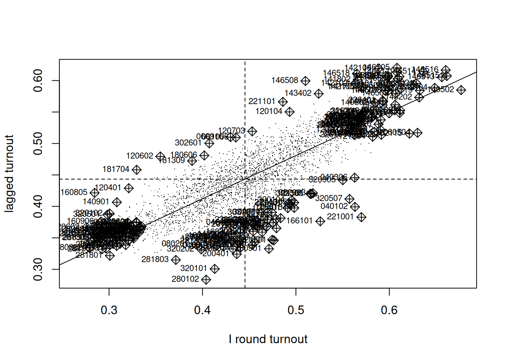
# Plot with zstandard=False, pass scatter_kwds to match pch="." and cex=1
fig, ax = moran_scatterplot(
moran_res,
zstandard=False,
scatter_kwds={'marker': '.', 's': 15}
)
ax.set_xlabel("I round turnout")
ax.set_ylabel("lagged turnout")
plt.show()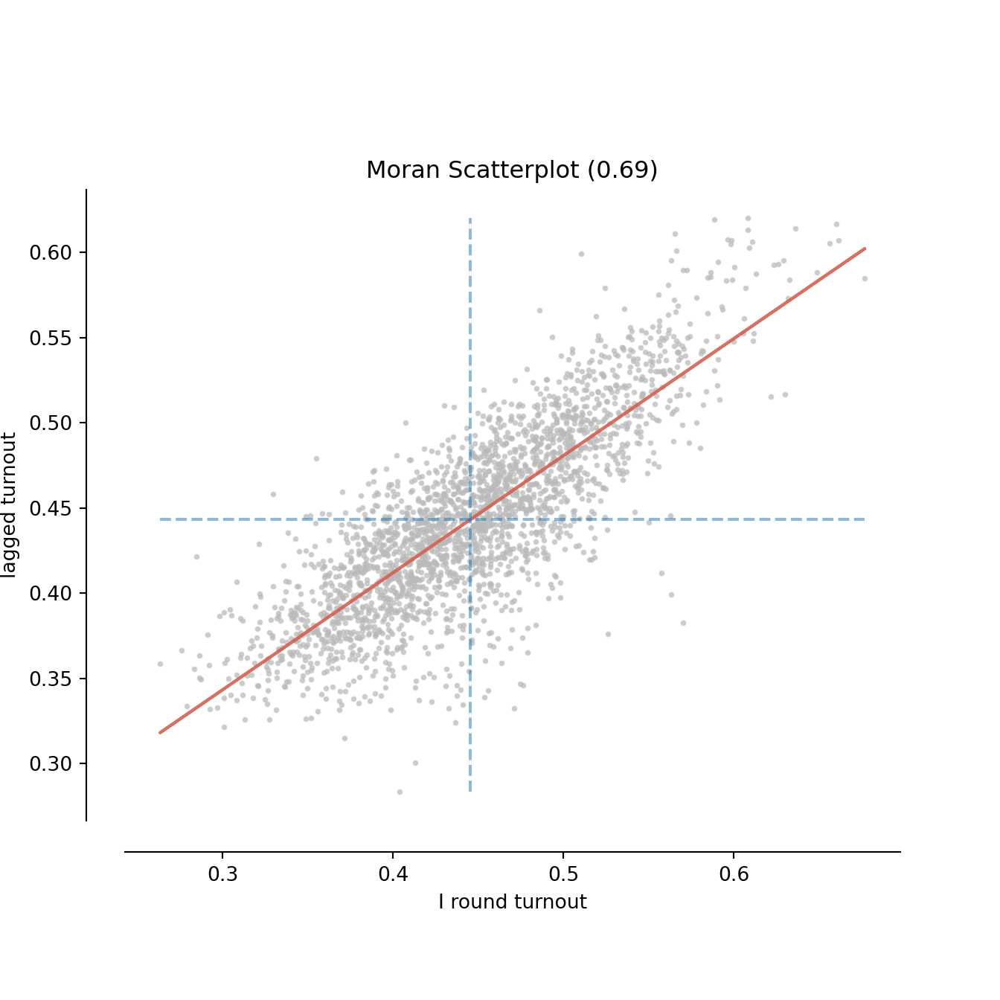
If we extract the hat value influence measure from the returned object, Figure 15.2 suggests that some edge entities exert more than proportional influence (perhaps because of row standardisation), as do entities in or near larger urban areas.
pol_pres15$hat_value <- infl_W$hat
if (tmap4) {
tm_shape(pol_pres15) +
tm_fill("hat_value", fill.scale = tm_scale(values = "brewer.yl_or_br"),
fill.legend = tm_legend(item.r = 0, frame = FALSE,
position = tm_pos_in("left", "bottom"))
)
} else {
tm_shape(pol_pres15) + tm_fill("hat_value")
}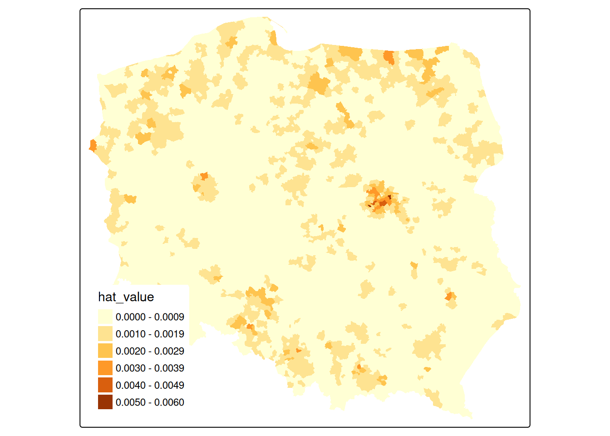
import statsmodels.api as sm
# Compute spatial lag using row-standardized weights
w_q_B.transform = 'r'
lag_turnout = weights.lag_spatial(w_q_B, I_turnout.values)
# Fit OLS of lagged values on original values (replicating moran.plot internals)
X = sm.add_constant(I_turnout.values)
ols_moran = sm.OLS(lag_turnout, X).fit()
# Extract hat (leverage) values
gdf['hat_value'] = ols_moran.get_influence().hat_matrix_diag
# Map hat values
fig, ax = plt.subplots(figsize=(8, 6))
gdf.plot(column='hat_value', cmap='YlOrBr', legend=True, ax=ax,
edgecolor='grey', linewidth=0.1)
ax.axis('off')
# (np.float64(137167.32400910824), np.float64(896392.4099798168), np.float64(101146.21132209411), np.float64(806851.5155901876))
plt.show()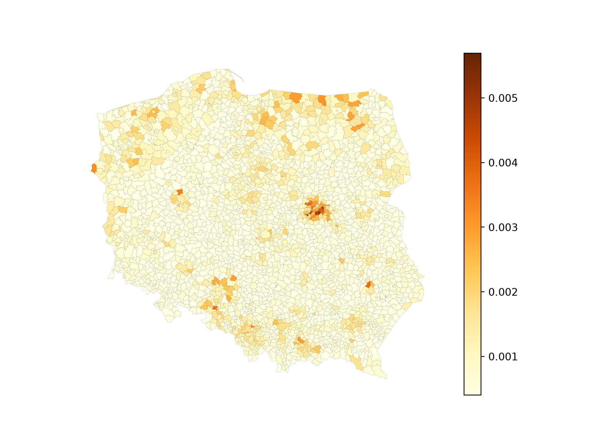
Local Moran’s \(I_i\)
Bivand and Wong (2018) discuss issues impacting the use of local indicators, such as local Moran’s \(I_i\) and local Getis-Ord \(G_i\). Some issues affect the calculation of the local indicators, others inference from their values. Because \(n\) statistics may be calculated from the same number of observations, there are multiple comparison problems that need to be addressed. Caldas de Castro and Singer (2006) conclude, based on a typical dataset and a simulation exercise, that the false discovery rate (FDR) adjustment of probability values will certainly give a better picture of interesting clusters than no adjustment. Following this up, Anselin (2019) explores the combination of FDR adjustments with the use of redefined “significance” cutoffs (Benjamin et al. 2018), for example \(0.01\), \(0.005\), and \(0.001\) instead of \(0.1\), \(0.05\), and \(0.01\); the use of the term interesting rather than significant is also preferred. This is discussed further in Bivand (2022a). As in the global case, misspecification remains a source of confusion, and, further, interpreting local spatial autocorrelation in the presence of global spatial autocorrelation is challenging (Ord and Getis 2001; Tiefelsdorf 2002; Bivand, Müller, and Reder 2009).
args(localmoran)print(inspect.signature(Moran_Local))
# (y, w, transformation='r', permutations=999, geoda_quads=False, n_jobs=1, keep_simulations=True, seed=None, island_weight=0)# function (x, listw, zero.policy = attr(listw, "zero.policy"),
# na.action = na.fail, conditional = TRUE, alternative =
# "two.sided", mlvar = TRUE, spChk = NULL, adjust.x = FALSE)In an important clarification, Sauer et al. (2021) show that the comparison of standard deviates for local Moran’s \(I_i\) based on analytical formulae and conditional permutation in Bivand and Wong (2018) was based on a misunderstanding. Sokal, Oden, and Thomson (1998) provide alternative analytical formulae for standard deviates of local Moran’s \(I_i\) based either on total or conditional permutation, but the analytical formulae used in Bivand and Wong (2018), based on earlier practice, only use total permutation, and consequently do not match the simulation conditional permutations. Thanks to a timely pull request, localmoran now has a conditional argument (default TRUE) using alternative formulae from the appendix of Sokal, Oden, and Thomson (1998). The mlvar and adjust.x arguments to localmoran are discussed in Bivand and Wong (2018), and permit matching with other implementations. Taking "two.sided" probability values (the default), we obtain:
I_turnout |>
localmoran(listw = lw_q_W) -> locmlocm = Moran_Local(I_turnout, w_q_B, permutations=0)The \(I_i\) local indicators when summed and divided by the sum of the spatial weights equal global Moran’s \(I\), showing the possible presence of positive and negative local spatial autocorrelation:
all.equal(sum(locm[,1])/Szero(lw_q_W),
unname(moran.test(I_turnout, lw_q_W)$estimate[1]))
# [1] TRUEw_q_B.transform = 'r'
moran_W = Moran(I_turnout, w_q_B, permutations=0)
print(locm.Is.sum() / w_q_B.s0)
# 0.6866361967127403
print(moran_W.I)
# 0.6869115119479902Using stats::p.adjust to adjust for multiple comparisons, we see that over 15% of the 2495 local measures have p-values < 0.005 if no adjustment is applied, but only 1.5% using Bonferroni adjustment to control the family-wise error rate, with two other choices shown: "fdr" is the Benjamini and Hochberg (1995) false discovery rate (almost 6%) and "BY" (Benjamini and Yekutieli 2001), another false discovery rate adjustment (about 2.5%):
pva <- function(pv) cbind("none" = pv,
"FDR" = p.adjust(pv, "fdr"), "BY" = p.adjust(pv, "BY"),
"Bonferroni" = p.adjust(pv, "bonferroni"))
locm |>
subset(select = "Pr(z != E(Ii))", drop = TRUE) |>
pva() -> pvsp
f <- function(x) sum(x < 0.005)
apply(pvsp, 2, f)
# none FDR BY Bonferroni
# 385 149 64 38from scipy import stats
from statsmodels.stats.multitest import multipletests
# Compute analytical two-sided p-values from locm
z_analytical = (locm.Is - locm.EIc) / np.sqrt(locm.VIc)
p_analytical = 2 * stats.norm.sf(np.abs(z_analytical))
def pva(pv):
result = pd.DataFrame({'none': pv})
for method, name in [('fdr_bh', 'FDR'), ('fdr_by', 'BY'),
('bonferroni', 'Bonferroni')]:
result[name] = multipletests(pv, method=method)[1]
return result
pvsp = pva(p_analytical)
print((pvsp < 0.005).sum())
# none 384
# FDR 149
# BY 64
# Bonferroni 38
# dtype: int64In the global measure case, bootstrap permutations may be used as an alternative to analytical methods for possible inference, where both the theoretical development of the analytical variance of the measure, and the permutation scheme, shuffle all of the observed values. In the local case, conditional permutation should be used, fixing the value at observation \(i\) and randomly sampling from the remaining \(n-1\) values to find randomised values at neighbours. Conditional permutation is provided as function localmoran_perm, which may use multiple compute nodes to sample in parallel if provided, and permits the setting of a seed for the random number generator across the compute nodes. The number of simulations nsim also controls the precision of the ranked estimates of the probability value based on the rank of observed \(I_i\) among the simulated values:
library(parallel)
invisible(spdep::set.coresOption(max(detectCores()-1L, 1L)))
I_turnout |>
localmoran_perm(listw = lw_q_W, nsim = 9999,
iseed = 1) -> locm_p##no parallel option found
locm_p = Moran_Local(I_turnout, w_q_B, permutations=9999, seed=1)The outcome is that over 15% of observations have two sided p-values < 0.005 without multiple comparison adjustment, and about 1.5% with Bonferroni adjustment, when the p-values are calculated using the standard deviate of the permutation samples and the normal distribution.
#"Pr(z != E(Ii))" — permutation standard deviate p-values (two-sided)
p_std_twosided = np.minimum(locm_p.p_z_sim * 2, 1.0)
pvsp = pva(p_std_twosided)
print((pvsp < 0.005).sum())Since the variable under analysis may not be normally distributed, the p-values can also be calculated by finding the rank of the observed \(I_i\) among the rank-based simulated values, and looking up the probability value from the uniform distribution taking the alternative choice into account:
Now the "BY" and Bonferroni counts of interesting locations are zero with 9999 samples, but may be recovered by increasing the sample count to 999999 if required; the FDR adjustment and interesting cutoff 0.005 yields about 5% locations.
gdf['locm_pv'] = multipletests(p_analytical, method='fdr_bh')[1]
gdf['locm_std_pv'] = multipletests(p_std_twosided, method='fdr_bh')[1]
gdf['locm_p_pv'] = multipletests(p_rank_twosided, method='fdr_bh')[1]Code
pv_brks <- c(0, 0.0005, 0.001, 0.005, 0.01, 0.05, 0.1, 0.2, 0.5, 0.75, 1)
if (tmap4) {
tm_shape(pol_pres15) +
tm_polygons(fill=c("locm_pv", "locm_std_pv", "locm_p_pv"),
fill.legend = tm_legend("Pseudo p-values\nLocal Moran's I",
frame=FALSE, item.r = 0),
fill.scale = tm_scale(breaks = pv_brks, values="-brewer.yl_or_br"),
fill.free=FALSE, lwd=0.01) +
## see https://github.com/r-tmap/tmap/issues/1111:
#tm_facets_grid(columns=2, rows=2) +
tm_layout(panel.labels = c("Analytical conditional",
"Permutation std. dev.", "Permutation rank"))
} else {
tm_shape(pol_pres15) +
tm_fill(c("locm_pv", "locm_std_pv", "locm_p_pv"),
breaks=pv_brks,
title = "Pseudo p-values\nLocal Moran's I",
palette="-YlOrBr") +
tm_facets(free.scales = FALSE, ncol = 2) +
tm_layout(panel.labels = c("Analytical conditional",
"Permutation std. dev.",
"Permutation rank"))
}
# [plot mode] fit legend/component: Some legend items or map
# compoments do not fit well, and are therefore rescaled.
# ℹ Set the tmap option `component.autoscale = FALSE` to disable
# rescaling.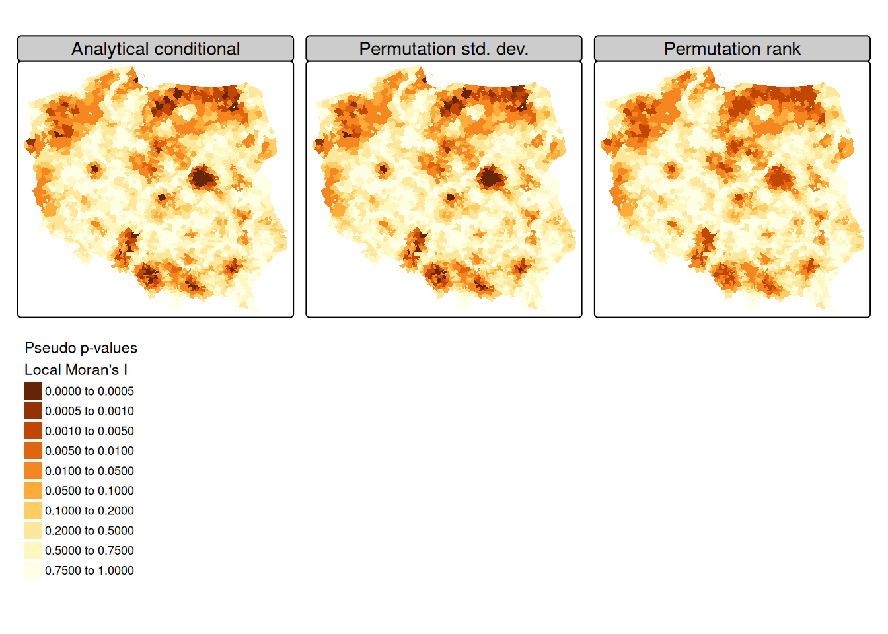
from matplotlib.colors import BoundaryNorm
pv_brks = [0, 0.0005, 0.001, 0.005, 0.01, 0.05, 0.1, 0.2, 0.5, 0.75, 1]
cmap = plt.cm.YlOrBr_r
norm = BoundaryNorm(pv_brks, ncolors=cmap.N)
fig, axes = plt.subplots(2, 2, figsize=(14, 10))
axes = axes.flatten()
cols = ['locm_pv', 'locm_std_pv', 'locm_p_pv']
titles = ['Analytical conditional', 'Permutation std. dev.', 'Permutation rank']
for ax, col, title in zip(axes[:3], cols, titles):
gdf.plot(column=col, ax=ax, cmap=cmap, norm=norm,
edgecolor='grey', linewidth=0.01, legend=False)
ax.set_title(title)
ax.axis('off')
axes[3].axis('off')
sm_cb = plt.cm.ScalarMappable(cmap=cmap, norm=norm)
fig.colorbar(sm_cb, ax=axes, orientation='horizontal',
fraction=0.03, pad=0.05,
label="Pseudo p-values Local Moran's I")
plt.tight_layout()
plt.show()Proceeding using the FDR adjustment and an interesting location cutoff of \(0.005\), we can see from Figure 15.3 that the adjusted probability values for the analytical conditional approach, the approach using the moments of the sampled values from permutation sampling, and the approach using the ranks of observed values among permutation samples all yield similar maps, as the distribution of the input variable is quite close to normal.
In presenting local Moran’s \(I\), use is often made of “hotspot” maps. Because \(I_i\) takes high values both for strong positive autocorrelation of low and high values of the input variable, it is hard to show where “clusters” of similar neighbours with low or high values of the input variable occur. The quadrants of the Moran plot are used, by creating a categorical quadrant variable interacting the input variable and its spatial lag split at their means. The quadrant categories are then set to NA if, for the chosen probability value and adjustment, \(I_i\) would not be considered interesting. Here, for the FDR adjusted conditional analytical probability values (Figure 15.3, upper left panel), 53 observations belong to "Low-Low" cluster cores, and 96 to "High-High" cluster cores, similarly for the standard deviate-based permutation p-values (Figure 15.3, upper right panel), but the rank-based permutation p-values reduce the "High-High" count and increase the "Low-Low" count Figure 15.3 lower left panel:
quadr <- attr(locm, "quadr")$mean
a <- table(addNA(quadr))
locm |> hotspot(Prname="Pr(z != E(Ii))", cutoff = 0.005,
droplevels=FALSE) -> pol_pres15$hs_an_q
locm_p |> hotspot(Prname="Pr(z != E(Ii))", cutoff = 0.005,
droplevels=FALSE) -> pol_pres15$hs_ac_q
locm_p |> hotspot(Prname="Pr(z != E(Ii)) Sim", cutoff = 0.005,
droplevels = FALSE) -> pol_pres15$hs_cp_q
b <- table(addNA(pol_pres15$hs_an_q))
c <- table(addNA(pol_pres15$hs_ac_q))
d <- table(addNA(pol_pres15$hs_cp_q))
t(rbind("Moran plot quadrants" = a, "Analytical cond." = b,
"Permutation std. cond." = c, "Permutation rank cond." = d))
# Moran plot quadrants Analytical cond.
# Low-Low 1040 53
# High-Low 264 0
# Low-High 213 0
# High-High 978 96
# <NA> 0 2346
# Permutation std. cond. Permutation rank cond.
# Low-Low 54 62
# High-Low 0 0
# Low-High 0 0
# High-High 93 66
# <NA> 2348 2367# Quadrant labels mapping from Moran_Local q attribute
# PySAL: 1=HH, 2=LH, 3=LL, 4=HL
q_labels = {1: 'High-High', 2: 'Low-High', 3: 'Low-Low', 4: 'High-Low'}
quadr = pd.Categorical([q_labels[q] for q in locm.q],
categories=['Low-Low', 'High-Low', 'Low-High', 'High-High'])
a = quadr.value_counts(dropna=False).sort_index()
def hotspot(quadrants, pvalues, cutoff=0.005):
fdr_pv = multipletests(pvalues, method='fdr_bh')[1]
hs = quadrants.copy()
hs[fdr_pv >= cutoff] = np.nan
return hs
# Quadrants from permutation run (for consistency with locm_p)
quadr_p = pd.Categorical([q_labels[q] for q in locm_p.q],
categories=['Low-Low', 'High-Low', 'Low-High', 'High-High'])
gdf['hs_an_q'] = hotspot(quadr, p_analytical, cutoff=0.005)
gdf['hs_ac_q'] = hotspot(quadr_p, p_std_twosided, cutoff=0.005)
gdf['hs_cp_q'] = hotspot(quadr_p, p_rank_twosided, cutoff=0.005)
b = gdf['hs_an_q'].value_counts(dropna=False).sort_index()
c = gdf['hs_ac_q'].value_counts(dropna=False).sort_index()
d = gdf['hs_cp_q'].value_counts(dropna=False).sort_index()
print(pd.DataFrame({
'Moran plot quadrants': a,
'Analytical cond.': b,
'Permutation std. cond.': c,
'Permutation rank cond.': d
}).fillna(0).astype(int))pol_pres15$hs_an_q <- droplevels(pol_pres15$hs_an_q)
pol_pres15$hs_ac_q <- droplevels(pol_pres15$hs_ac_q)
pol_pres15$hs_cp_q <- droplevels(pol_pres15$hs_cp_q)Code
if (tmap4) {
pal <- rev(RColorBrewer::brewer.pal(4, "Set3")[-c(2,3)])
tm_shape(pol_pres15) +
tm_polygons(fill = c("hs_an_q", "hs_ac_q", "hs_cp_q"),
fill.legend = tm_legend("Turnout hotspot status \nLocal Moran's I",
frame = FALSE, item.r = 0),
fill.scale = tm_scale(values = pal, value.na = "grey95",
label.na = "Not \"interesting\""),
lwd = 0.01, fill.free = FALSE) +
tm_facets_wrap(ncol = 2, nrow = 2) +
tm_layout(panel.labels = c("Analytical conditional",
"Permutation std. cond.", "Permutation rank cond."))
} else {
tm_shape(pol_pres15) +
tm_fill(c("hs_an_q", "hs_ac_q", "hs_cp_q"),
colorNA = "grey95", textNA="Not \"interesting\"",
title = "Turnout hotspot status \nLocal Moran's I",
palette = RColorBrewer::brewer.pal(4, "Set3")[-c(2,3)]) +
tm_facets(free.scales = FALSE, ncol = 2) +
tm_layout(panel.labels = c("Analytical conditional",
"Permutation std. cond.",
"Permutation rank cond."))
}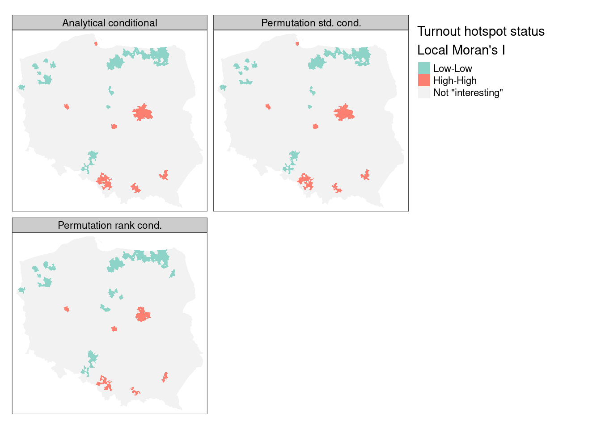
import matplotlib.patches as mpatches
cat_order = ['Low-Low', 'High-Low', 'Low-High', 'High-High']
cat_colors = {'Low-Low': '#49c0c0ff', 'High-High': '#db4e2bff'}
na_color = '#F2F2F2'
fig, axes = plt.subplots(2, 2, figsize=(14, 10))
axes = axes.flatten()
cols = ['hs_an_q', 'hs_ac_q', 'hs_cp_q']
titles = ['Analytical conditional', 'Permutation std. cond.', 'Permutation rank cond.']
for ax, col, title in zip(axes[:3], cols, titles):
gdf.plot(color=na_color, ax=ax, edgecolor='grey', linewidth=0.01)
for cat in cat_order:
subset = gdf[gdf[col] == cat]
if len(subset) > 0:
subset.plot(color=cat_colors.get(cat, 'white'), ax=ax,
edgecolor='grey', linewidth=0.01)
ax.set_title(title)
ax.axis('off')
axes[3].axis('off')
patches = [mpatches.Patch(color=cat_colors[c], label=c) for c in cat_order if c in cat_colors]
patches.append(mpatches.Patch(color=na_color, label='Not "interesting"'))
fig.legend(handles=patches, title="Turnout hotspot status\nLocal Moran's I",
loc='lower center', ncol=3, frameon=False)
plt.tight_layout(rect=[0, 0.08, 1, 1])
plt.show()Figure 15.4 shows that there is very little difference between the FDR-adjusted interesting clusters with a choice of an \(\alpha=0.005\) probability value cutoff for the three approaches of analytical conditional standard deviates, permutation-based standard deviates, and rank-based probability values; the "High-High" cluster cores are metropolitan areas.
Tiefelsdorf (2002) argues that standard approaches to the calculation of the standard deviates of local Moran’s \(I_i\) should be supplemented by numerical estimates, and shows that saddlepoint approximations are a computationally efficient way of achieving this goal. The localmoran.sad function takes a fitted linear model as its first argument, so we first fit a null (intercept only) model, but use case weights because the numbers entitled to vote vary greatly between observations:
lm(I_turnout ~ 1) -> lm_nullX_null = np.ones((len(I_turnout), 1))
lm_null = sm.OLS(I_turnout, X_null).fit()Saddlepoint approximation is as computationally intensive as conditional permutation, because, rather than computing a simple measure on many samples, a good deal of numerical calculation is needed for each local approximation:
lm_null |> localmoran.sad(nb = nb_q, style = "W",
alternative = "two.sided") |>
summary() -> locm_sad_null##pysal doesnot have saddle point approximation
##using permutation on the residuals as the closest approximation
locm_sad_null = Moran_Local(lm_null.resid, w_q_B, permutations=9999, seed=1)The chief advantage of the saddlepoint approximation is that it takes a fitted linear model rather than simply a numerical variable, so the residuals are analysed. With an intercept-only model, the results are similar to local Moran’s \(I_i\), but we can weight the observations, here by the count of those entitled to vote, which should down-weight small units of observation:
lm(I_turnout ~ 1, weights = pol_pres15$I_entitled_to_vote) ->
lm_null_weights
lm_null_weights |>
localmoran.sad(nb = nb_q, style = "W",
alternative = "two.sided") |>
summary() -> locm_sad_null_weightswts = gdf['I_entitled_to_vote'].values.astype(float)
lm_null_w = sm.WLS(I_turnout, X_null, weights=wts).fit()
locm_sad_null_weights = Moran_Local(lm_null_w.resid, w_q_B, permutations=9999, seed=1)Next we add the categorical variable distinguishing between rural, urban and other types of observational unit:
lm(I_turnout ~ Types, weights=pol_pres15$I_entitled_to_vote) ->
lm_types
lm_types |> localmoran.sad(nb = nb_q, style = "W",
alternative = "two.sided") |>
summary() -> locm_sad_typesTypes_dummies = pd.get_dummies(Types, drop_first=True, dtype=float)
X_types = sm.add_constant(Types_dummies)
lm_types = sm.WLS(I_turnout, X_types, weights=wts).fit()
locm_sad_types = Moran_Local(lm_types.resid, w_q_B, permutations=9999, seed=1)def hotspot_resid(moran_local, cutoff=0.005):
q_labels = {1: 'High-High', 2: 'Low-High', 3: 'Low-Low', 4: 'High-Low'}
quadr = pd.Categorical([q_labels[q] for q in moran_local.q],
categories=['Low-Low', 'High-Low', 'Low-High', 'High-High'])
p_twosided = np.minimum(moran_local.p_sim * 2, 1.0)
fdr_pv = multipletests(p_twosided, method='fdr_bh')[1]
hs = quadr.copy()
hs[fdr_pv >= cutoff] = np.nan
return hs
gdf['locm_sad0'] = hotspot_resid(locm_sad_null)
gdf['locm_sad1'] = hotspot_resid(locm_sad_null_weights)
gdf['locm_sad2'] = hotspot_resid(locm_sad_types)Code
if (tmap4) {
pal <- RColorBrewer::brewer.pal(4, "Set3")[c(4, 1)]
tm_shape(pol_pres15) +
tm_polygons(fill = c("hs_cp_q", "locm_sad0", "locm_sad1", "locm_sad2"),
fill.legend = tm_legend("Turnout hotspot status \nLocal Moran's I",
frame = FALSE, item.r = 0),
fill.scale = tm_scale(values = pal, value.na = "grey95",
label.na = "Not \"interesting\""),
lwd = 0.01, fill.free = FALSE) +
tm_facets_wrap(ncol = 2, nrow = 2) +
tm_layout(panel.labels = c("Permutation rank",
"saddlepoint null", "saddlepoint weighted null",
"saddlepoint weighted types"))
} else {
tm_shape(pol_pres15) +
tm_fill(c("hs_cp_q", "locm_sad0", "locm_sad1", "locm_sad2"),
colorNA = "grey95", textNA = "Not \"interesting\"",
title = "Turnout hotspot status \nLocal Moran's I",
palette =RColorBrewer::brewer.pal(4, "Set3")[c(1, 4, 2)]) +
tm_facets(free.scales = FALSE, ncol = 2) +
tm_layout(panel.labels = c("Permutation rank",
"saddlepoint null", "saddlepoint weighted null",
"saddlepoint weighted types"))
}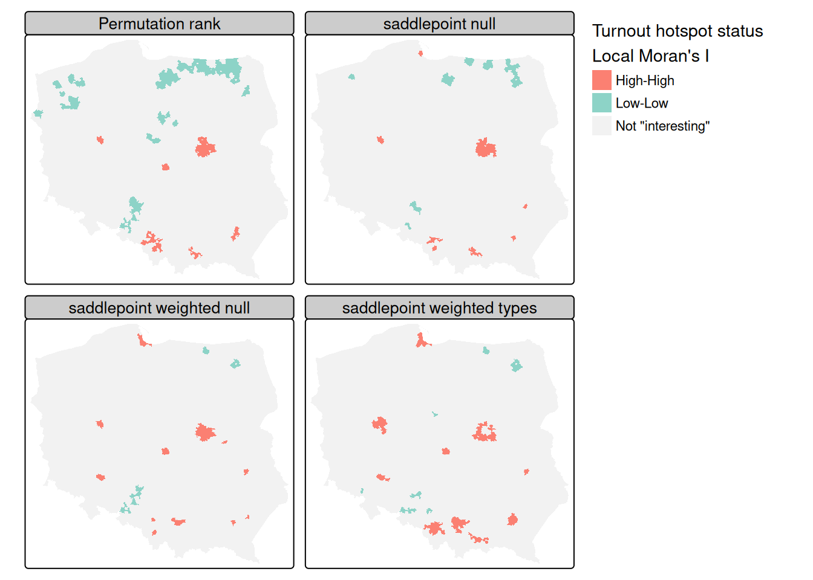
fig, axes = plt.subplots(2, 2, figsize=(14, 10))
axes = axes.flatten()
cols = ['hs_cp_q', 'locm_sad0', 'locm_sad1', 'locm_sad2']
titles = ['Permutation rank', 'Null model residuals',
'Weighted null residuals', 'Weighted types residuals']
na_color = '#F2F2F2'
for ax, col, title in zip(axes, cols, titles):
gdf.plot(color=na_color, ax=ax, edgecolor='grey', linewidth=0.01)
for cat in cat_order:
subset = gdf[gdf[col] == cat]
if len(subset) > 0:
subset.plot(color=cat_colors.get(cat, 'white'), ax=ax,
edgecolor='grey', linewidth=0.01)
ax.set_title(title)
ax.axis('off')
patches = [mpatches.Patch(color=cat_colors[c], label=c) for c in cat_order if c in cat_colors]
patches.append(mpatches.Patch(color=na_color, label='Not "interesting"'))
fig.legend(handles=patches, title="Turnout hotspot status\nLocal Moran's I",
loc='lower center', ncol=3, frameon=False)
plt.tight_layout(rect=[0, 0.08, 1, 1])
plt.show()rbind(null = append(table(addNA(pol_pres15$locm_sad0)),
c("Low-High" = 0), 1),
weighted = append(table(addNA(pol_pres15$locm_sad1)),
c("Low-High" = 0), 1),
type_weighted = append(table(addNA(pol_pres15$locm_sad2)),
c("Low-High" = 0), 1))
# Low-Low Low-High High-High <NA>
# null 19 0 55 2421
# weighted 9 0 52 2434
# type_weighted 13 0 81 2401b0 = gdf['locm_sad0'].value_counts(dropna=False).sort_index()
b1 = gdf['locm_sad1'].value_counts(dropna=False).sort_index()
b2 = gdf['locm_sad2'].value_counts(dropna=False).sort_index()
print(pd.DataFrame({
'null': b0,
'weighted': b1,
'type_weighted': b2
}).fillna(0).astype(int).T)
# Low-Low High-Low Low-High High-High NaN
# null 42 0 0 83 2370
# weighted 42 0 0 83 2370
# type_weighted 45 0 0 55 2395Figure 15.5 includes the permutation rank cluster cores for comparison (upper left panel). Because saddlepoint approximation permits richer mean models to be used, and possibly because the approximation approach is inherently local, relating regression residual values at \(i\) to those of its neighbours, the remaining three panels diverge somewhat. The intercept-only (null) model is fairly similar to standard local Moran’s \(I_i\), but weighting by counts of eligible voters removes most of the "Low-Low" cluster cores. Adding the type categorical variable strengthens the urban "High-High" cluster cores but removes the Warsaw boroughs as interesting cluster cores. The central boroughs are surrounded by other boroughs, all with high turnout, not driven by autocorrelation but by being metropolitan boroughs. It is also possible to use saddlepoint approximation where the global spatial process has been incorporated, removing the conflation of global and local spatial autocorrelation in standard approaches.
The same can also be accomplished using exact methods, but may require more tuning as numerical integration may fail, returning NaN rather than the exact estimate of the standard deviate (Bivand, Müller, and Reder 2009):
lm_types |> localmoran.exact(nb = nb_q, style = "W",
alternative = "two.sided", useTP=TRUE, truncErr=1e-8) |>
as.data.frame() -> locm_ex_types## no exact method available
locm_ex_types = Moran_Local(lm_types.resid, w_q_B, permutations=99999, seed=1)locm_ex_types |> hotspot(Prname = "Pr. (exact)",
cutoff = 0.005) -> pol_pres15$locm_exgdf['locm_ex'] = hotspot_resid(locm_ex_types)Code
if (tmap4) {
pal <- RColorBrewer::brewer.pal(4, "Set3")[c(4, 1)]
tm_shape(pol_pres15) +
tm_polygons(fill = c("locm_sad2", "locm_ex"),
fill.legend = tm_legend("Turnout hotspot status \nLocal Moran's I",
frame = FALSE, item.r = 0),
fill.scale = tm_scale(values = pal, value.na = "grey95",
label.na = "Not \"interesting\""),
lwd = 0.01, fill.free = FALSE) +
tm_facets_wrap(nrow = 1) +
tm_layout(panel.labels = c("saddlepoint weighted types",
"Exact weighted types"))
} else {
tm_shape(pol_pres15) +
tm_fill(c("locm_sad2", "locm_ex"), colorNA = "grey95",
textNA = "Not \"interesting\"",
title = "Turnout hotspot status \nLocal Moran's I",
palette = RColorBrewer::brewer.pal(4, "Set3")[c(1, 4, 2)]) +
tm_facets(free.scales = FALSE, ncol = 2) +
tm_layout(panel.labels = c("saddlepoint weighted types",
"Exact weighted types"))
}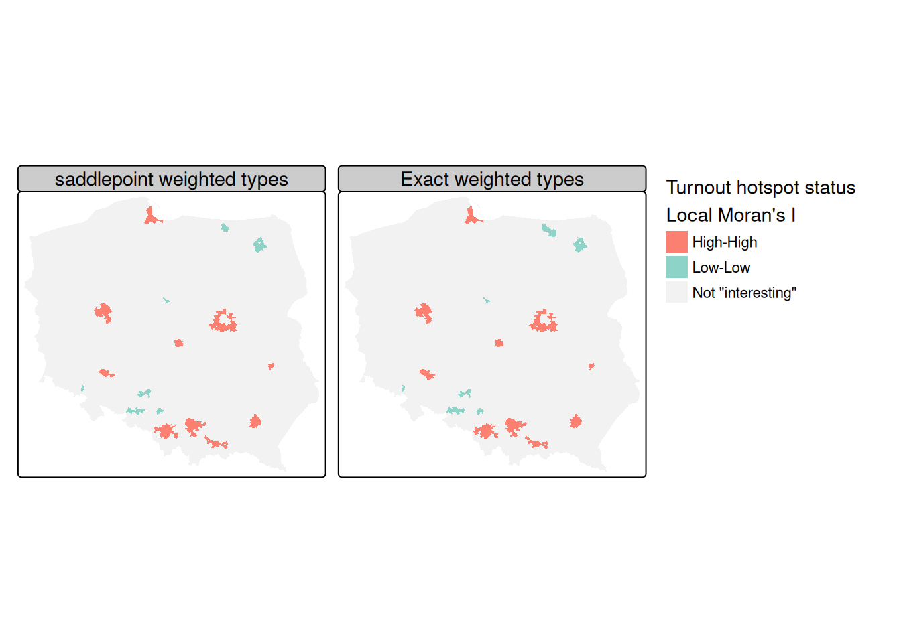
fig, axes = plt.subplots(1, 2, figsize=(14, 5))
cols = ['locm_sad2', 'locm_ex']
titles = ['Permutation weighted types', 'High-permutation weighted types']
for ax, col, title in zip(axes, cols, titles):
gdf.plot(color=na_color, ax=ax, edgecolor='grey', linewidth=0.01)
for cat in cat_order:
subset = gdf[gdf[col] == cat]
if len(subset) > 0:
subset.plot(color=cat_colors.get(cat, 'white'), ax=ax,
edgecolor='grey', linewidth=0.01)
ax.set_title(title)
ax.axis('off')
patches = [mpatches.Patch(color=cat_colors[c], label=c) for c in cat_order if c in cat_colors]
patches.append(mpatches.Patch(color=na_color, label='Not "interesting"'))
fig.legend(handles=patches, title="Turnout hotspot status\nLocal Moran's I",
loc='lower center', ncol=3, frameon=False)
plt.tight_layout(rect=[0, 0.1, 1, 1])
plt.show()As Figure 15.6 shows, the exact and saddlepoint approximation methods yield almost identical cluster classifications from the same regression residuals, multiple comparison adjustment method, and cutoff level, with the exact method returning four more interesting observations:
sad2 = gdf['locm_sad2'].astype(object).where(gdf['locm_sad2'].notna(), 'NA')
ex = gdf['locm_ex'].astype(object).where(gdf['locm_ex'].notna(), 'NA')
print(pd.crosstab(sad2, ex, margins=False))
# locm_ex High-High Low-Low NA
# locm_sad2
# High-High 51 0 4
# Low-Low 0 45 0
# NA 24 31 2340Local Getis-Ord \(G_i\)
The local Getis-Ord \(G_i\) measure (Getis and Ord 1992, 1996) is reported as a standard deviate, and, may also take the \(G^*_i\) form where self-neighbours are inserted into the neighbour object using include.self. The observed and expected values of local \(G\) with their analytical variances may also be returned if return_internals=TRUE.
I_turnout |>
localG(lw_q_W, return_internals = TRUE) -> locGfrom esda.getisord import G_Local
locG = G_Local(I_turnout, w_q_B, permutations=0)Permutation inference is also available for this measure:
I_turnout |>
localG_perm(lw_q_W, nsim = 9999, iseed = 1) -> locG_plocG_p = G_Local(I_turnout, w_q_B, permutations=9999, seed=1)The correlation between the two-sided probability values for analytical and permutation-based standard deviates (first two columns and rows) and permutation rank-based probability values are very strong:
z_G = (locG.Gs - locG.EGs) / np.sqrt(locG.VGs)
p_G_analytical = 2 * stats.norm.sf(np.abs(z_G))
p_G_std = np.minimum(locG_p.p_z_sim * 2, 1.0)
p_G_rank = np.minimum(locG_p.p_sim * 2, 1.0)
print(np.corrcoef(np.column_stack([p_G_analytical, p_G_std, p_G_rank]).T))
# [[1. 0.90726452 0.90708349]
# [0.90726452 1. 0.99966316]
# [0.90708349 0.99966316 1. ]]Local Geary’s \(C_i\)
Anselin (2019) extends Anselin (1995) and has been recently added to spdep thanks to contributions by Josiah Parry (pull request https://github.com/r-spatial/spdep/pull/66). The conditional permutation framework used for \(I_i\) and \(G_i\) is also used for \(C_i\):
I_turnout |>
localC_perm(lw_q_W, nsim=9999, iseed=1) -> locC_pfrom esda.geary_local import Geary_Local
locC_p = Geary_Local(connectivity=w_q_B, permutations=9999, seed=1).fit(I_turnout)The permutation standard deviate-based and rank-based probability values are not as highly correlated as for \(G_i\), in part reflecting the difference in view of autocorrelation in \(C_i\) as represented by a function of the differences between values rather than the products of values:
## manually calculate z
sims = np.array(locC_p.rlocalG)
sim_mean = sims.mean(axis=1)
sim_std = sims.std(axis=1)
z_C = (np.array(locC_p.localG) - sim_mean) / sim_std
p_C_std = 2 * stats.norm.sf(np.abs(z_C))
p_C_rank = np.minimum(np.array(locC_p.p_sim) * 2, 1.0)
print(np.corrcoef(p_C_std, p_C_rank))
# [[1. 0.96498926]
# [0.96498926 1. ]]# Hotspot for local Geary C
def hotspot_C(c_local, x, w, cutoff=0.005):
x_arr = np.array(x).flatten()
mean_x = x_arr.mean()
lag_x = weights.lag_spatial(w, x_arr)
mean_lag = lag_x.mean()
q = np.where(
(x_arr > mean_x) & (lag_x > mean_lag), 'High-High',
np.where((x_arr <= mean_x) & (lag_x <= mean_lag), 'Low-Low',
np.where((x_arr <= mean_x) & (lag_x > mean_lag), 'Low-High',
'High-Low')))
labels = pd.Categorical(q, categories=['Low-Low', 'High-Low', 'Low-High', 'High-High'])
p_twosided = np.minimum(np.array(c_local.p_sim) * 2, 1.0)
fdr_pv = multipletests(p_twosided, method='fdr_bh')[1]
hs = labels.copy()
hs[fdr_pv >= cutoff] = np.nan
return hs
# Hotspot for local Getis-Ord G
def hotspot_G(g_local, x, cutoff=0.005):
x_arr = np.array(x).flatten()
mean_x = x_arr.mean()
labels = pd.Categorical(
np.where(x_arr > mean_x, 'High', 'Low'),
categories=['Low', 'High'])
p_twosided = np.minimum(np.array(g_local.p_sim) * 2, 1.0)
fdr_pv = multipletests(p_twosided, method='fdr_bh')[1]
hs = labels.copy()
hs[fdr_pv >= cutoff] = np.nan
return hs
gdf['hs_C'] = hotspot_C(locC_p, I_turnout, w_q_B)
gdf['hs_G'] = hotspot_G(locG_p, I_turnout)Code
if (tmap4) {
pal <- RColorBrewer::brewer.pal(4, "Set3")[-c(2,3)]
m1 <- tm_shape(pol_pres15) +
tm_polygons(fill = "hs_cp_q",
fill.legend = tm_legend("Turnout hotspot status\nLocal Moran I",
position = tm_pos_out("center","bottom"),
frame = FALSE, item.r = 0),
fill.scale = tm_scale(values = pal, value.na = "grey95",
label.na = "Not \"interesting\""),
lwd = 0.01) +
tm_layout(meta.margins = c(.2, 0, 0, 0))
m2 <- tm_shape(pol_pres15) +
tm_polygons(fill = "hs_G",
fill.legend = tm_legend("Turnout hotspot status\nLocal Getis/Ord G",
position = tm_pos_out("center","bottom"),
frame = FALSE, item.r = 0),
fill.scale = tm_scale(values = pal, value.na = "grey95",
label.na = "Not \"interesting\""),
lwd = 0.01) +
tm_layout(meta.margins = c(.2, 0, 0, 0))
m3 <- tm_shape(pol_pres15) +
tm_polygons(fill = "hs_C",
fill.legend = tm_legend("Turnout hotspot status\nLocal Geary C",
position = tm_pos_out("center","bottom"),
frame = FALSE, item.r = 0),
fill.scale = tm_scale(values = rev(pal), value.na = "grey95",
label.na = "Not \"interesting\""),
lwd = 0.01) +
tm_layout(meta.margins = c(.2, 0, 0, 0))
} else {
m1 <- tm_shape(pol_pres15) +
tm_fill("hs_cp_q",
palette = RColorBrewer::brewer.pal(4, "Set3")[-c(2,3)],
colorNA = "grey95", textNA = "Not \"interesting\"",
title = "Turnout hotspot status\nLocal Moran I") +
tm_layout(legend.outside=TRUE, legend.outside.position="bottom")
m2 <- tm_shape(pol_pres15) +
tm_fill("hs_G",
palette = RColorBrewer::brewer.pal(4, "Set3")[-c(2,3)],
colorNA = "grey95", textNA="Not \"interesting\"",
title = "Turnout hotspot status\nLocal Getis/Ord G") +
tm_layout(legend.outside=TRUE, legend.outside.position="bottom")
m3 <- tm_shape(pol_pres15) +
tm_fill("hs_C",
palette = RColorBrewer::brewer.pal(4, "Set3")[c(4, 1, 3)],
colorNA = "grey95", textNA="Not \"interesting\"",
title = "Turnout hotspot status\nLocal Geary C") +
tm_layout(legend.outside=TRUE, legend.outside.position="bottom")
}
tmap_arrange(m1, m2, m3, nrow=1)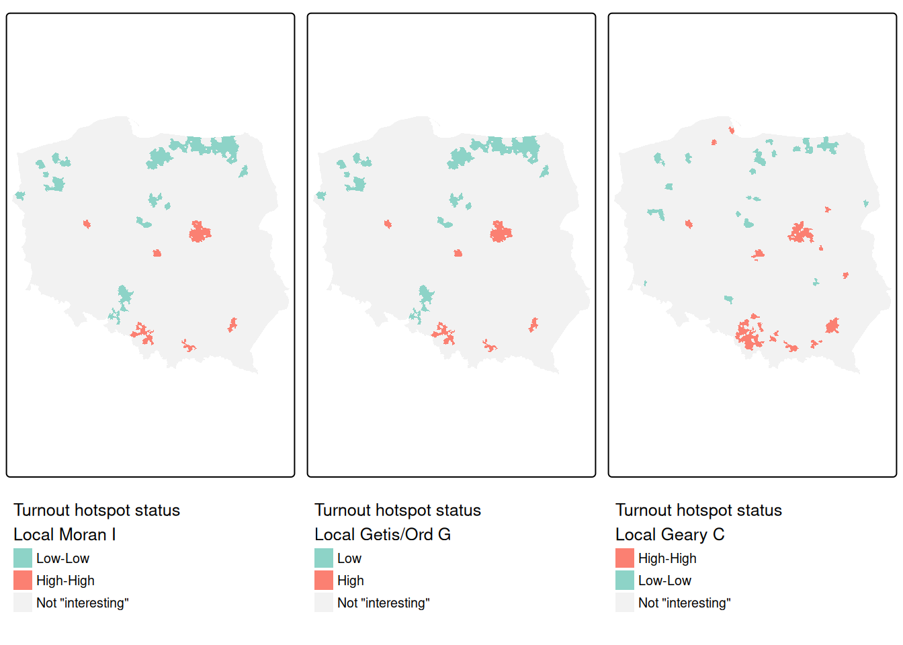
fig, axes = plt.subplots(1, 3, figsize=(18, 6))
# Panel 1: Local Moran's I
ax = axes[0]
gdf.plot(color=na_color, ax=ax, edgecolor='grey', linewidth=0.01)
for cat in cat_order:
subset = gdf[gdf['hs_cp_q'] == cat]
if len(subset) > 0:
subset.plot(color=cat_colors.get(cat, 'white'), ax=ax,
edgecolor='grey', linewidth=0.01)
ax.set_title("Local Moran I")
ax.axis('off')
# Panel 2: Local Getis-Ord G
G_colors = {'Low': '#FFFFB3', 'High': '#8DD3C7'}
ax = axes[1]
gdf.plot(color=na_color, ax=ax, edgecolor='grey', linewidth=0.01)
for cat in ['Low', 'High']:
subset = gdf[gdf['hs_G'] == cat]
if len(subset) > 0:
subset.plot(color=G_colors[cat], ax=ax,
edgecolor='grey', linewidth=0.01)
ax.set_title("Local Getis/Ord G")
ax.axis('off')
# Panel 3: Local Geary's C
ax = axes[2]
gdf.plot(color=na_color, ax=ax, edgecolor='grey', linewidth=0.01)
for cat in cat_order:
subset = gdf[gdf['hs_C'] == cat]
if len(subset) > 0:
subset.plot(color=cat_colors.get(cat, 'white'), ax=ax,
edgecolor='grey', linewidth=0.01)
ax.set_title("Local Geary C")
ax.axis('off')
patches_I = [mpatches.Patch(color=cat_colors[c], label=c) for c in cat_order if c in cat_colors]
patches_G = [mpatches.Patch(color=G_colors[c], label=c) for c in ['Low', 'High']]
all_patches = patches_I + patches_G
all_patches.append(mpatches.Patch(color=na_color, label='Not "interesting"'))
fig.legend(handles=all_patches, title="Turnout hotspot status",
loc='lower center', ncol=4, frameon=False)
plt.tight_layout(rect=[0, 0.1, 1, 1])
plt.show()Figure 15.7 shows that the cluster cores identified as interesting using \(I_i\), \(G_i\) and \(C_i\) for the same variable, first-round turnout, and the same spatial weights, for rank-based permutation FDR adjusted probability values and an \(\alpha = 0.005\) cutoff, are very similar. In most cases, the "High-High" cluster cores are urban areas, and "Low-Low" cores are sparsely populated rural areas in the North, in addition to the German national minority areas close to the southern border. The three measures use slightly different strategies for naming cluster cores: \(I_i\) uses quadrants of the Moran scatterplot, \(G_i\) splits into "Low" and "High" on the mean of the input variable (which is the same as the first component in the \(I_i\) tuple), and univariate \(C_i\) on the mean of the input variable and zero for its lag. As before, cluster categories that do not occur are dropped.
For comparison, and before moving to multivariate \(C_i\), let us take the univariate \(C_i\) for the second (final) round turnout. One would expect that the run-off between the two top candidates from the first-round might mobilise some voters who did not have a clear first-round preference, but that it discourages some of those with strong loyalty to a candidate eliminated after the first round:
pol_pres15 |>
st_drop_geometry() |>
subset(select = II_turnout) |>
localC_perm(lw_q_W, nsim=9999, iseed=1) -> locC_p_IIII_turnout = gdf['II_turnout']
locC_p_II = Geary_Local(connectivity=w_q_B, permutations=9999, seed=1).fit(II_turnout)locC_p_II |> hotspot(Prname = "Pr(z != E(Ci)) Sim",
cutoff = 0.005) -> pol_pres15$hs_C_IIgdf['hs_C_II'] = hotspot_C(locC_p_II, II_turnout, w_q_B)Multivariate \(C_i\) (Anselin 2019) is taken as the sum of univariate \(C_i\) divided by the number of variables, but permutation is fixed so that the correlation between the variables is unchanged:
pol_pres15 |>
st_drop_geometry() |>
subset(select = c(I_turnout, II_turnout)) |>
localC_perm(lw_q_W, nsim=9999, iseed=1) -> locMvC_pfrom esda.geary_local_mv import Geary_Local_MV
locMvC_p = Geary_Local_MV(connectivity=w_q_B, permutations=9999).fit(
[gdf['I_turnout'].values, gdf['II_turnout'].values])Let us check that the multivariate \(C_i\) is equal to the mean of the univariate \(C_i\):
all.equal(locMvC_p, (locC_p+locC_p_II)/2,
check.attributes = FALSE)
# [1] TRUEmv_vals = np.array(locMvC_p.localG)
uv_mean = (np.array(locC_p.localG) + np.array(locC_p_II.localG)) / 2
print(np.allclose(mv_vals, uv_mean))
# TruelocMvC_p |> hotspot(Prname = "Pr(z != E(Ci)) Sim",
cutoff = 0.005) -> pol_pres15$hs_MvCdef hotspot_MvC(mv_local, x_vars, w, cutoff=0.005):
x_mean = np.column_stack(x_vars).mean(axis=1)
mean_val = x_mean.mean()
lag_x = weights.lag_spatial(w, x_mean)
mean_lag = lag_x.mean()
q = np.where(
(x_mean > mean_val) & (lag_x > mean_lag), 'High-High',
np.where((x_mean <= mean_val) & (lag_x <= mean_lag), 'Low-Low',
np.where((x_mean <= mean_val) & (lag_x > mean_lag), 'Low-High',
'High-Low')))
labels = pd.Categorical(q, categories=['Low-Low', 'High-Low', 'Low-High', 'High-High'])
p_twosided = np.minimum(np.array(mv_local.p_sim) * 2, 1.0)
fdr_pv = multipletests(p_twosided, method='fdr_bh')[1]
hs = labels.copy()
hs[fdr_pv >= cutoff] = np.nan
return hs
gdf['hs_MvC'] = hotspot_MvC(locMvC_p, [I_turnout.values, II_turnout.values], w_q_B)Code
if (tmap4) {
pal <- RColorBrewer::brewer.pal(4, "Set3")[-c(2,3)]
m3 <- tm_shape(pol_pres15) +
tm_polygons(fill = "hs_C",
fill.legend = tm_legend("First round turnout\nLocal Geary C",
position = tm_pos_out("center","bottom"),
frame = FALSE, item.r = 0),
fill.scale = tm_scale(values = rev(pal), value.na = "grey95",
label.na = "Not \"interesting\""),
lwd = 0.01) +
tm_layout(meta.margins = c(.2, 0, 0, 0))
pal <- RColorBrewer::brewer.pal(4, "Set3")[c(4, 1, 3, 2)]
m4 <- tm_shape(pol_pres15) +
tm_polygons(fill = "hs_C_II",
fill.legend = tm_legend("Second round turnout\nLocal Geary C",
position = tm_pos_out("center","bottom"),
frame = FALSE, item.r = 0),
fill.scale = tm_scale(values = pal, value.na = "grey95",
label.na = "Not \"interesting\""),
lwd = 0.01) +
tm_layout(meta.margins = c(.2, 0, 0, 0))
pal <- RColorBrewer::brewer.pal(4, "Set3")[c(4, 1)]
m5 <- tm_shape(pol_pres15) +
tm_polygons(fill = "hs_MvC",
fill.legend = tm_legend("Both rounds turnout\nLocal Multivariate Geary C",
position = tm_pos_out("center","bottom"),
frame = FALSE, item.r = 0),
fill.scale = tm_scale_categorical(values = pal, value.na = "grey95",
label.na = "Not \"interesting\""),
lwd = 0.01) +
tm_layout(meta.margins = c(.2, 0, 0, 0))
} else {
m3 <- tm_shape(pol_pres15) +
tm_fill("hs_C",
palette = RColorBrewer::brewer.pal(4, "Set3")[c(4, 1, 3, 2)],
colorNA = "grey95", textNA = "Not \"interesting\"",
title = "First round turnout\nLocal Geary C") +
tm_layout(legend.outside=TRUE, legend.outside.position="bottom")
m4 <- tm_shape(pol_pres15) +
tm_fill("hs_C_II",
palette = RColorBrewer::brewer.pal(4, "Set3")[c(4, 1, 3, 2)],
colorNA = "grey95", textNA = "Not \"interesting\"",
title="Second round turnout\nLocal Geary C") +
tm_layout(legend.outside=TRUE, legend.outside.position="bottom")
m5 <- tm_shape(pol_pres15) +
tm_fill("hs_MvC",
palette = RColorBrewer::brewer.pal(4, "Set3")[c(4, 1)],
colorNA = "grey95", textNA = "Not \"interesting\"",
title = "Both rounds turnout\nLocal Multivariate Geary C") +
tm_layout(legend.outside=TRUE, legend.outside.position="bottom")
}
tmap_arrange(m3, m4, m5, nrow=1)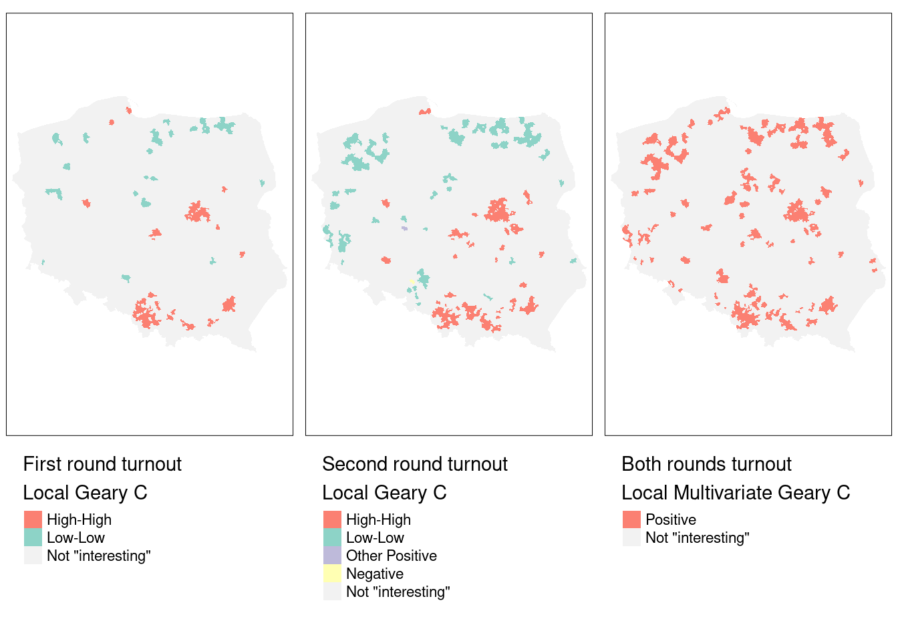
fig, axes = plt.subplots(1, 3, figsize=(18, 6))
# Panel 1: Local Geary C, first-round turnout
ax = axes[0]
gdf.plot(color=na_color, ax=ax, edgecolor='grey', linewidth=0.01)
for cat in cat_order:
subset = gdf[gdf['hs_C'] == cat]
if len(subset) > 0:
subset.plot(color=cat_colors.get(cat, 'white'), ax=ax,
edgecolor='grey', linewidth=0.01)
ax.set_title("First round turnout\nLocal Geary C")
ax.axis('off')
# Panel 2: Local Geary C, second-round turnout
ax = axes[1]
gdf.plot(color=na_color, ax=ax, edgecolor='grey', linewidth=0.01)
for cat in cat_order:
subset = gdf[gdf['hs_C_II'] == cat]
if len(subset) > 0:
subset.plot(color=cat_colors.get(cat, 'white'), ax=ax,
edgecolor='grey', linewidth=0.01)
ax.set_title("Second round turnout\nLocal Geary C")
ax.axis('off')
# Panel 3: Local Multivariate Geary C, both rounds
ax = axes[2]
gdf.plot(color=na_color, ax=ax, edgecolor='grey', linewidth=0.01)
for cat in cat_order:
subset = gdf[gdf['hs_MvC'] == cat]
if len(subset) > 0:
subset.plot(color=cat_colors.get(cat, 'white'), ax=ax,
edgecolor='grey', linewidth=0.01)
ax.set_title("Both rounds turnout\nLocal Multivariate Geary C")
ax.axis('off')
patches = [mpatches.Patch(color=cat_colors[c], label=c) for c in cat_order if c in cat_colors]
patches.append(mpatches.Patch(color=na_color, label='Not "interesting"'))
fig.legend(handles=patches, title="Turnout hotspot status",
loc='lower center', ncol=3, frameon=False)
plt.tight_layout(rect=[0, 0.1, 1, 1])
plt.show()Figure 15.8 indicates that the multivariate measure picks up aggregated elements of observations found interesting in the two univariate measures. We can break this down by interacting the first- and second-round univariate measures, and tabulating against the multivariate measure.
table(droplevels(interaction(addNA(pol_pres15$hs_C),
addNA(pol_pres15$hs_C_II), sep=":")),
addNA(pol_pres15$hs_MvC))
#
# Positive <NA>
# High-High:High-High 82 0
# NA:High-High 37 21
# Low-Low:Low-Low 24 0
# NA:Low-Low 41 14
# NA:Other Positive 1 0
# NA:Negative 0 1
# High-High:NA 17 3
# Low-Low:NA 6 2
# NA:NA 43 2203hs_C = gdf['hs_C'].astype(object).where(gdf['hs_C'].notna(), 'NA')
hs_C_II = gdf['hs_C_II'].astype(object).where(gdf['hs_C_II'].notna(), 'NA')
hs_MvC = gdf['hs_MvC'].astype(object).where(gdf['hs_MvC'].notna(), 'NA')
interaction = hs_C.astype(str) + ':' + hs_C_II.astype(str)
print(pd.crosstab(interaction, hs_MvC, margins=False))
# hs_MvC High-High High-Low Low-High Low-Low NA
# row_0
# High-High:High-High 79 0 0 0 0
# High-High:NA 10 0 0 0 0
# Low-Low:Low-Low 0 0 0 33 0
# Low-Low:NA 0 0 0 9 2
# NA:High-High 61 0 0 0 15
# NA:Low-High 0 0 0 0 1
# NA:Low-Low 0 0 0 46 7
# NA:NA 28 1 1 41 2161For these permutation outcomes, 47 observations in the multivariate case are found interesting where neither of the univariate \(C_i\) were found interesting (FDR, cutoff \(0.005\)). Almost all of the observations found interesting in both first and second round, are also interesting in the multivariate case, but outcomes are more mixed when observations were only found interesting in one of the two rounds.
The rgeoda package
Geoda has been wrapped for R as rgeoda (Li and Anselin 2022), and provides very similar functionalities for the exploration of spatial autocorrelation in areal data as matching parts of spdep. The active objects are kept as pointers to a compiled code workspace; using compiled code for all operations (as in Geoda itself) makes rgeoda perform fast, but makes it less flexible when modifications or enhancements are desired.
library(rgeoda)
Geoda_w <- queen_weights(pol_pres15)
summary(Geoda_w)
# name value
# 1 number of observations: 2495
# 2 is symmetric: TRUE
# 3 sparsity: 0.00228786229774178
# 4 # min neighbors: 1
# 5 # max neighbors: 13
# 6 # mean neighbors: 5.70821643286573
# 7 # median neighbors: 6
# 8 has isolates: FALSEimport pygeoda
geoda_obj = pygeoda.open(gdf)
geoda_w = pygeoda.queen_weights(geoda_obj)
print(geoda_w)
# Weights Meta-data:
# number of observations: 2495
# is symmetric: True
# sparsity: 0.002287862297741776
# # min neighbors: 1
# # max neighbors: 13
# # mean neighbors: 5.708216432865732
# # median neighbors: 6.0
# has isolates: FalseFor comparison, let us take the multivariate \(C_i\) measure of turnout in the two rounds of the 2015 Polish presidential election as above:
lisa <- local_multigeary(Geoda_w,
pol_pres15[c("I_turnout", "II_turnout")],
cpu_threads = max(detectCores() - 1, 1),
permutations = 99999, seed = 1)lisa = pygeoda.local_multigeary(geoda_w,
[gdf['I_turnout'].tolist(), gdf['II_turnout'].tolist()],
permutations=99999, seed=1)The contiguity neighbours are the same as those found by poly2nb:
all.equal(card(nb_q), lisa_num_nbrs(lisa),
check.attributes = FALSE)
# [1] TRUEnb_card = np.array(w_q_B.cardinalities.values())
lisa_nbrs = np.array(lisa.lisa_num_nbrs())
print(np.array_equal(nb_card, lisa_nbrs))
# False
## need recheckas are the multivariate \(C_i\) values the same as those found above:
all.equal(lisa_values(lisa), c(locMvC_p),
check.attributes = FALSE)
# [1] TRUE##not equal
# need recheck
print(np.allclose(np.array(lisa.lisa_values()), np.array(locMvC_p.localG)))
# FalseOne difference is that the range of the folded two-sided rank-based permutation probability values used by rgeoda is \([0, 0.5]\), also reported in spdep:
# need recheck
p_twosided = np.minimum(np.array(locMvC_p.p_sim) * 2, 1.0)
p_folded = np.array(locMvC_p.p_sim)
print(f"Pr(z != E(Ci)) Sim range: [{p_twosided.min():.5f}, {p_twosided.max():.5f}]")
# Pr(z != E(Ci)) Sim range: [0.00020, 0.99940]
print(f"Pr(folded) Sim range: [{p_folded.min():.5f}, {p_folded.max():.5f}]")
# Pr(folded) Sim range: [0.00010, 0.49970]This means that the cutoff corresponding to \(0.005\) over \([0, 1]\) is \(0.0025\) over \([0, 0.5]\):
locMvC_p |> hotspot(Prname = "Pr(folded) Sim",
cutoff = 0.0025) -> pol_pres15$hs_MvCadef hotspot_MvCa(mv_local, x_vars, w, cutoff=0.0025):
x_mean = np.column_stack(x_vars).mean(axis=1)
mean_val = x_mean.mean()
lag_x = weights.lag_spatial(w, x_mean)
mean_lag = lag_x.mean()
q = np.where(
(x_mean > mean_val) & (lag_x > mean_lag), 'High-High',
np.where((x_mean <= mean_val) & (lag_x <= mean_lag), 'Low-Low',
np.where((x_mean <= mean_val) & (lag_x > mean_lag), 'Low-High',
'High-Low')))
labels = pd.Categorical(q, categories=['Low-Low', 'High-Low', 'Low-High', 'High-High'])
fdr_pv = multipletests(np.array(mv_local.p_sim), method='fdr_bh')[1]
hs = labels.copy()
hs[fdr_pv >= cutoff] = np.nan
return hs
gdf['hs_MvCa'] = hotspot_MvCa(locMvC_p, [I_turnout.values, II_turnout.values], w_q_B)So although local_multigeary used the default cutoff of \(0.05\) in setting cluster core classes, we can sharpen the cutoff and apply the FDR adjustment on output components of the lisa object in the compiled code workspace:
mvc <- factor(lisa_clusters(lisa), levels=0:2,
labels = lisa_labels(lisa)[1:3])
is.na(mvc) <- p.adjust(lisa_pvalues(lisa), "fdr") >= 0.0025
pol_pres15$geoda_mvc <- droplevels(mvc)lisa_labels_list = lisa.lisa_labels()
mvc = pd.Categorical(
[lisa_labels_list[c] for c in lisa.lisa_clusters()],
categories=lisa_labels_list[:3])
fdr_pv = multipletests(lisa.lisa_pvalues(), method='fdr_bh')[1]
mvc = mvc.copy()
mvc[fdr_pv >= 0.0025] = np.nan
gdf['geoda_mvc'] = mvcAbout 80 more observations are found interesting in the rgeoda permutation, and further analysis of implementation details is still in progress:
addmargins(table(spdep = addNA(pol_pres15$hs_MvCa),
rgeoda = addNA(pol_pres15$geoda_mvc)))
# rgeoda
# spdep Positive <NA> Sum
# Positive 245 6 251
# <NA> 77 2167 2244
# Sum 322 2173 2495spdep = gdf['hs_MvCa'].astype(object).where(gdf['hs_MvCa'].notna(), 'NA')
rgeoda = gdf['geoda_mvc'].astype(object).where(gdf['geoda_mvc'].notna(), 'NA')
print(pd.crosstab(spdep, rgeoda, margins=True))
# geoda_mvc NA Positive All
# hs_MvCa
# High-High 10 168 178
# High-Low 0 1 1
# Low-High 0 1 1
# Low-Low 7 122 129
# NA 2152 34 2186
# All 2169 326 2495Code
if (tmap4) {
pal <- RColorBrewer::brewer.pal(4, "Set3")[c(4, 1)]
m5 <- tm_shape(pol_pres15) +
tm_polygons(fill = "hs_MvC",
fill.legend = tm_legend("Both rounds turnout spdep\nLocal Multivariate Geary C",
position = tm_pos_in("left","bottom"),
frame = FALSE, item.r = 0),
fill.scale = tm_scale_categorical(values = pal, value.na = "grey95",
label.na = "Not \"interesting\""),
lwd = 0.01)
m6 <- tm_shape(pol_pres15) +
tm_polygons(fill = "geoda_mvc",
fill.legend = tm_legend("Both rounds turnout rgeoda\nLocal Multivariate Geary C",
position = tm_pos_in("left","bottom"),
frame = FALSE, item.r = 0),
fill.scale = tm_scale_categorical(values = pal, value.na = "grey95",
label.na = "Not \"interesting\""),
lwd = 0.01)
} else {
m5 <- tm_shape(pol_pres15) +
tm_fill("hs_MvCa",
palette = RColorBrewer::brewer.pal(4, "Set3")[c(4, 1)],
colorNA = "grey95", textNA = "Not \"interesting\"",
title = "Both rounds turnout spdep\nLocal Multivariate Geary C")
m6 <- tm_shape(pol_pres15) +
tm_fill("geoda_mvc",
palette = RColorBrewer::brewer.pal(4, "Set3")[c(4, 1)],
colorNA = "grey95", textNA = "Not \"interesting\"",
title="Both rounds turnout rgeoda\nLocal Multivariate Geary C")
}
tmap_arrange(m5, m6, nrow=1)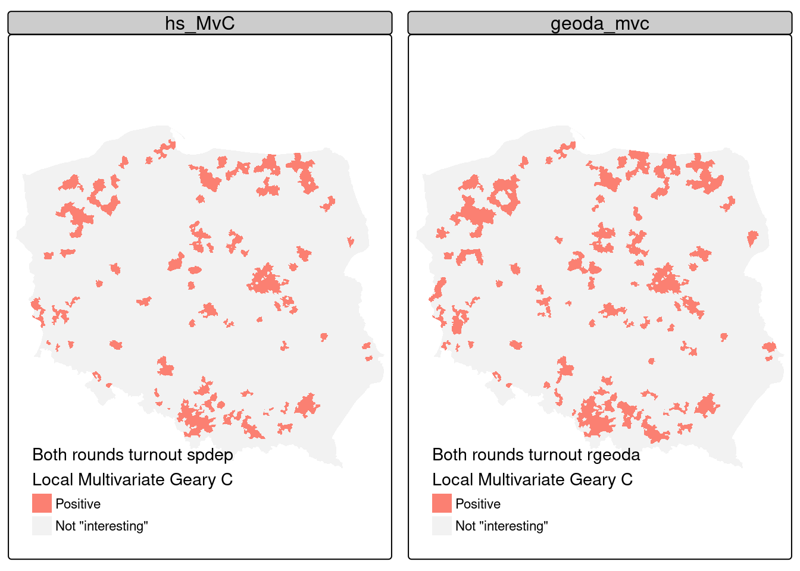
fig, axes = plt.subplots(1, 2, figsize=(14, 5))
cols = ['hs_MvCa', 'geoda_mvc']
titles = ['Both rounds turnout PySAL\nLocal Multivariate Geary C',
'Both rounds turnout pygeoda\nLocal Multivariate Geary C']
for ax, col, title in zip(axes, cols, titles):
gdf.plot(color=na_color, ax=ax, edgecolor='grey', linewidth=0.01)
for cat in cat_order:
subset = gdf[gdf[col] == cat]
if len(subset) > 0:
subset.plot(color=cat_colors.get(cat, 'white'), ax=ax,
edgecolor='grey', linewidth=0.01)
ax.set_title(title)
ax.axis('off')
patches = [mpatches.Patch(color=cat_colors[c], label=c) for c in cat_order if c in cat_colors]
patches.append(mpatches.Patch(color=na_color, label='Not "interesting"'))
fig.legend(handles=patches, title="Turnout hotspot status",
loc='lower center', ncol=3, frameon=False)
plt.tight_layout(rect=[0, 0.1, 1, 1])
plt.show()Figure 15.9 shows that while almost all of the 242 observations found interesting in the spdep implementation were also interesting for rgeoda, the latter found a further 86 interesting. Of course, permutation outcomes are bound to vary, but it remains to establish whether either or both implementations require revision.
15.4 Exercises
- Why are join-count measures on a chessboard so different between
rookandqueenneighbours? - Please repeat the simulation shown in Section 15.1 using the chessboard polygons and the row-standardised
queencontiguity neighbours. Why is it important to understand that spatial autocorrelation usually signals (unavoidable) misspecification in our data? - Why is false discovery rate adjustment recommended for local measures of spatial autocorrelation?
- Compare the local Moran’s \(I_i\) standard deviate values for the simulated data from exercise 2 (above) for the analytical conditional approach, and saddlepoint approximation. Consider the advantages and disadvantages of the saddlepoint approximation approach.